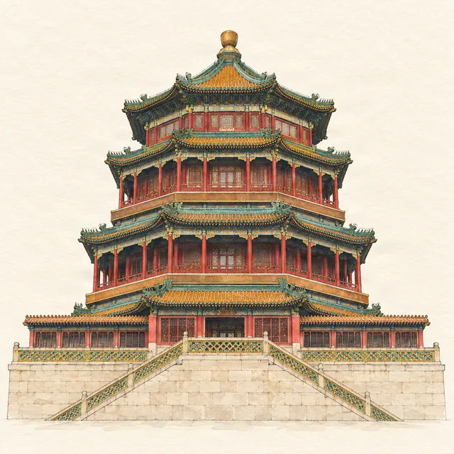

Summer Palace · route
The Summer Palace in one day
Last checked:

How long do you need at the Summer Palace?
Three to five hours. The classic route from the East Palace Gate along the Long Corridor to the Marble Boat, then round to the Seventeen-Arch Bridge, takes about 3 hours at an easy pace; a full day lets you add Suzhou Street and the back lake. The park covers about 3 square kilometres, three-quarters of it water, so most of the visit is walking along the shore.
How do I get tickets?
- Park ticket: ¥30 from April to October, ¥20 from November to March.
- Combined ticket: ¥60 or ¥50, adding the Tower of Buddhist Incense, the Garden of Virtue and Harmony, Suzhou Street and the museum.
- Book on the official "Summer Palace" WeChat account with your passport.
What are the opening hours?
- Park: 06:00–20:00 (last entry 19:00) from April to October; 06:30–19:00 (last entry 18:00) from November to March.
- Halls and gardens inside: 08:00–18:00 in summer, 08:30–17:00 in winter, usually closed on Mondays except public holidays.
What is the best route?
- East Palace Gate (0:00). The main gate, reached from Xiyuan station on metro Line 4.
- Hall of Benevolence and Longevity. Where Empress Dowager Cixi and the Guangxu Emperor received officials and foreign envoys.
- Garden of Virtue and Harmony. A three-storey opera stage built for Cixi in the 1890s (combined ticket).
- Hall of Jade Ripples and Hall of Happiness and Longevity. The lakeside courtyards where Guangxu was confined after 1898 and where Cixi lived.
- Long Corridor (about 0:50). 728 metres of painted walkway along the north shore. See the stories behind the paintings.
- Hall of Dispelling Clouds and Tower of Buddhist Incense (about 1:30). Climb the stairs up Longevity Hill to the tower for the view over Kunming Lake. It is steep; skip it if you are short of time or energy.
- Marble Boat (about 2:15). The stone boat at the west end of the corridor. See the stone boat that never sails.
- Across the lake (about 2:30). In the boating season, a ¥40 electric boat runs from the Marble Boat to South Lake Island (the boats stopped for the winter on 2 November 2026); otherwise walk the West Causeway, past the high-arched Jade Belt Bridge.
- Bronze Ox and Seventeen-Arch Bridge (about 3:00). A bronze ox cast in 1755 to guard against floods, and a long bridge with more than 500 carved lions on its balustrades.
- Exit at the New Palace Gate on the east shore, or return to the East Palace Gate.
Times assume an easy pace. Penyola's Summer Palace guide has this route as its Classic Highlights walk (about 3 hours 7 minutes), plus a shorter walk of about 1 hour 50 minutes and a full walk of about 5 hours.
What if I have only two hours?
Enter at the East Palace Gate, walk the Long Corridor to the Marble Boat and back along the shore. You see the corridor, the lake and the hill without the climb.
When is the best time to go?
Early morning on a weekday, when the park opens at 06:00 or 06:30 and the lake is calm; or late afternoon for sunset behind the Seventeen-Arch Bridge, especially around the winter solstice in late December, when the setting sun lines up with the bridge's arches. Avoid Chinese holidays.
Can I follow the route offline?
Yes. Penyola's Summer Palace guide puts the halls, bridges and pavilions on a hand-drawn map of the lake with illustrated stories and the suggested walks, stored on your phone.
More planning guides
- The Long Corridor paintings: stories behind them
- The Marble Boat: the stone boat that never sails
- Beijing in 2 days on visa-free transit
Sources
Checked on these official pages on 9 November 2026: